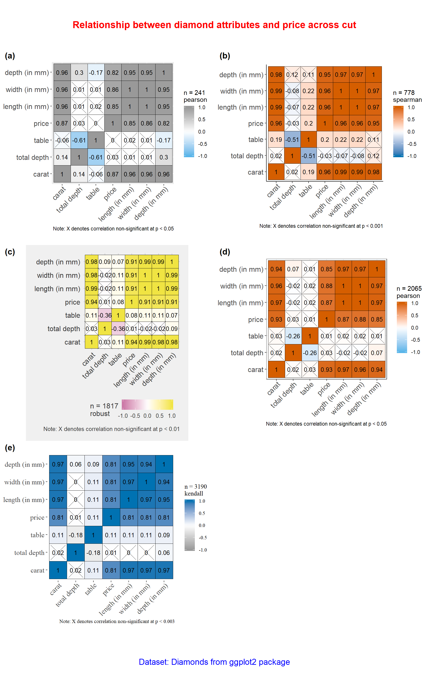

ggcorrmat
Indrajeet Patil
2018-09-01
ggcorrmat.RmdThe function ggstatsplot::ggcorrmat provides a quick way to produce publication-ready correlation matrix (aka correlalogram) plot. The function can also be used for quick data exploration. In addition to the plot, it can also be used to get a correlation coefficient matrix or the associated p-value matrix. Currently, the plot can display Pearson’s r, Spearman’s rho, and Kendall’s tau, and robust correlation coefficient (percentage bend correlation; see ?WRS2::pbcor). This function is a convenient wrapper around ggcorrplot::ggcorrplot function with some additional functionality.
We will see examples of how to use this function in this vignette with the gapminder and diamonds dataset.
To begin with, here are some instances where you would want to use ggcorrmat-
- to easily visualize a correlation matrix using
ggplot2 - to quickly explore correlation between (all) numeric variables in the dataset
Note before: The following demo uses the pipe operator (%>%), so in case you are not familiar with this operator, here is a good explanation: http://r4ds.had.co.nz/pipes.html
Correlation matrix plot with ggcorrmat
For the first example, we will use the gapminder dataset (available in eponymous package on CRAN) provides values for life expectancy, Gross Domestic Product (GDP) per capita, and population, every five years, from 1952 to 2007, for each of 142 countries and was collected by the Gapminder Foundation. Let’s have a look at the data-
library(gapminder)
library(dplyr)
dplyr::glimpse(x = gapminder)
#> Observations: 1,704
#> Variables: 6
#> $ country <fct> Afghanistan, Afghanistan, Afghanistan, Afghanistan, ...
#> $ continent <fct> Asia, Asia, Asia, Asia, Asia, Asia, Asia, Asia, Asia...
#> $ year <int> 1952, 1957, 1962, 1967, 1972, 1977, 1982, 1987, 1992...
#> $ lifeExp <dbl> 28.801, 30.332, 31.997, 34.020, 36.088, 38.438, 39.8...
#> $ pop <int> 8425333, 9240934, 10267083, 11537966, 13079460, 1488...
#> $ gdpPercap <dbl> 779.4453, 820.8530, 853.1007, 836.1971, 739.9811, 78...Let’s say we are interested in studying correlation between population of a country, average life expectancy, and GDP per capita across countries only for the year 2007.
The simplest way to get a correlation matrix is to stick to the defaults-
library(ggstatsplot)
# select data only from the year 2007
gapminder_2007 <- dplyr::filter(.data = gapminder::gapminder, year == 2007)
# producing the correlation matrix
ggstatsplot::ggcorrmat(
data = gapminder_2007, # data from which variable is to be taken
cor.vars = lifeExp:gdpPercap # specifying correlation matrix variables
)
This plot can be further modified with additional arguments-
ggstatsplot::ggcorrmat(
data = gapminder_2007, # data from which variable is to be taken
cor.vars = lifeExp:gdpPercap, # specifying correlation matrix variables
cor.vars.names = c("Life Expectancy",
"population",
"GDP (per capita)"),
corr.method = "kendall", # which correlation coefficient is to be computed
lab.col = "red", # label color
ggtheme = ggplot2::theme_light, # selected ggplot2 theme
ggstatsplot.layer = FALSE, # turn off default ggestatsplot theme overlay
type = "lower", # type of correlation matrix
colors = c("green", "white", "yellow"), # selecting color combination
title = "Gapminder correlation matrix", # custom title
subtitle = "Source: Gapminder Foundation" # custom subtitle
)
As seen from this correlation matrix, although there is no relationship between population and life expectancy worldwide, at least in 2007, there is a strong positive relationship between GDP, a well-established indicator of a country’s economic performance.
Given that there were only three variables, this doesn’t look that impressive. So let’s work with another example from ggplot2 package: the diamonds dataset. This dataset contains the prices and other attributes of almost 54,000 diamonds.
Let’s have a look at the data-
library(ggplot2)
dplyr::glimpse(x = ggplot2::diamonds)
#> Observations: 53,940
#> Variables: 10
#> $ carat <dbl> 0.23, 0.21, 0.23, 0.29, 0.31, 0.24, 0.24, 0.26, 0.22, ...
#> $ cut <ord> Ideal, Premium, Good, Premium, Good, Very Good, Very G...
#> $ color <ord> E, E, E, I, J, J, I, H, E, H, J, J, F, J, E, E, I, J, ...
#> $ clarity <ord> SI2, SI1, VS1, VS2, SI2, VVS2, VVS1, SI1, VS2, VS1, SI...
#> $ depth <dbl> 61.5, 59.8, 56.9, 62.4, 63.3, 62.8, 62.3, 61.9, 65.1, ...
#> $ table <dbl> 55, 61, 65, 58, 58, 57, 57, 55, 61, 61, 55, 56, 61, 54...
#> $ price <int> 326, 326, 327, 334, 335, 336, 336, 337, 337, 338, 339,...
#> $ x <dbl> 3.95, 3.89, 4.05, 4.20, 4.34, 3.94, 3.95, 4.07, 3.87, ...
#> $ y <dbl> 3.98, 3.84, 4.07, 4.23, 4.35, 3.96, 3.98, 4.11, 3.78, ...
#> $ z <dbl> 2.43, 2.31, 2.31, 2.63, 2.75, 2.48, 2.47, 2.53, 2.49, ...Let’s see the correlation matrix between different attributes of the diamond and the price.
# for reproducibility
set.seed(123)
# let's use just 30% of the data to speed it up
ggstatsplot::ggcorrmat(
data = dplyr::sample_frac(tbl = ggplot2::diamonds, size = 0.3),
cor.vars = c(carat, depth:z), # note how the variables are getting selected
cor.vars.names = c(
"carat",
"total depth",
"table",
"price",
"length (in mm)",
"width (in mm)",
"depth (in mm)"
),
hc.order = TRUE # use hierarchical clustering
)
We can make a number of changes to this basic correlation matrix. For example, since we were interested in relationship between price and other attributes, let’s make the price column to the the first column. Additionally, since we are running 6 correlations that are of a priori interest to us, we can adjust our threshold of significance to (0.05/6 ~ 0.008). Additionally, let’s use a non-parametric correlation coefficient. Please note that it is important to always make sure that the order in which cor.vars and cor.vars.names are entered is in sync. Otherwise, wrong column labels will be displayed.
# for reproducibility
set.seed(123)
# let's use just 30% of the data to speed it up
ggstatsplot::ggcorrmat(
data = dplyr::sample_frac(tbl = ggplot2::diamonds, size = 0.3),
cor.vars = c(price, carat, depth:table, x:z), # note how the variables are getting selected
cor.vars.names = c(
"price",
"carat",
"total depth",
"table",
"length (in mm)",
"width (in mm)",
"depth (in mm)"
),
corr.method = "spearman",
sig.level = 0.008,
type = "lower",
title = "Relationship between diamond attributes and price",
subtitle = "Dataset: Diamonds from ggplot2 package",
colors = c("#0072B2", "#D55E00", "#CC79A7"),
lab.col = "yellow",
lab.size = 6,
pch = 7,
pch.col = "white",
pch.cex = 14,
caption = expression( # changing the default caption text for the plot
paste(italic("Note"), ": Point shape denotes correlation non-significant at p < 0.008; adjusted for 6 comparisons")
)
)
As seen here, and unsurprisingly, the strongest predictor of the diamond price is its carat value, which a unit of mass equal to 200 mg. In other words, the heavier the diamond, the more expensive it is going to be.
Correlation statistics matrix with ggcorrmat
Another utility of ggcorrmat is in obtaining matrix of correlation coefficients and their p-values for a quick and dirty exploratory data analysis. For example, for the correlation matrix we just ran, we can get a coefficient matrix and a p-value matrix.
# for reproducibility
set.seed(123)
# to get correlations
ggstatsplot::ggcorrmat(
data = dplyr::sample_frac(tbl = ggplot2::diamonds, size = 0.3),
cor.vars = c(price, carat, depth:table, x:z),
output = "correlations",
corr.method = "robust",
digits = 3
)
#> # A tibble: 7 x 8
#> variable price carat depth table x y z
#> <chr> <dbl> <dbl> <dbl> <dbl> <dbl> <dbl> <dbl>
#> 1 price 1 0.936 -0.001 0.143 0.903 0.904 0.899
#> 2 carat 0.936 1 0.032 0.194 0.984 0.983 0.982
#> 3 depth -0.001 0.032 1 -0.28 -0.013 -0.015 0.095
#> 4 table 0.143 0.194 -0.28 1 0.2 0.195 0.166
#> 5 x 0.903 0.984 -0.013 0.2 1 0.998 0.992
#> 6 y 0.904 0.983 -0.015 0.195 0.998 1 0.991
#> 7 z 0.899 0.982 0.095 0.166 0.992 0.991 1
# to get p-values
ggstatsplot::ggcorrmat(
data = dplyr::sample_frac(tbl = ggplot2::diamonds, size = 0.3),
cor.vars = c(price, carat, depth:table, x:z),
output = "p-values",
corr.method = "robust",
digits = 3
)
#> # A tibble: 7 x 8
#> variable price carat depth table x y z
#> <chr> <dbl> <dbl> <dbl> <dbl> <dbl> <dbl> <dbl>
#> 1 price 1 0.935 0.003 0.142 0.901 0.903 0.898
#> 2 carat 0.935 1 0.038 0.19 0.983 0.983 0.982
#> 3 depth 0.003 0.038 1 -0.277 -0.008 -0.011 0.099
#> 4 table 0.142 0.19 -0.277 1 0.196 0.191 0.161
#> 5 x 0.901 0.983 -0.008 0.196 1 0.999 0.992
#> 6 y 0.903 0.983 -0.011 0.191 0.999 1 0.991
#> 7 z 0.898 0.982 0.099 0.161 0.992 0.991 1
Grouped analysis with grouped_ggcorrmat
What if we want to do the same analysis separately for each type of quality of the diamond cut (Fair, Good, Very Good, Premium, Ideal)? In that case, we will have to either write a for loop or use purrr, none of which seem like an exciting prospect.
ggstatsplot provides a special helper function for such instances: grouped_ggcorrmat. This is merely a wrapper function around ggstatsplot::combine_plots. It applies ggcorrmat across all levels of a specified grouping variable and then combines list of individual plots into a single plot. Note that the grouping variable can be anything: conditions in a given study, groups in a study sample, different studies, etc.
# for reproducibility
set.seed(123)
# let's use just 30% of the data to speed it up
ggstatsplot::grouped_ggcorrmat(
# arguments relevant for ggstatsplot::ggcorrmat
data = dplyr::sample_frac(tbl = ggplot2::diamonds, size = 0.3),
corr.method = "r", # percentage bend correlation coefficient
beta = 0.2, # bending constant
grouping.var = cut,
title.prefix = "Quality of cut",
cor.vars = c(carat, depth:z),
cor.vars.names = c(
"carat",
"total depth",
"table",
"price",
"length (in mm)",
"width (in mm)",
"depth (in mm)"
),
lab.size = 3.5,
# arguments relevant for ggstatsplot::combine_plots
title.text = "Relationship between diamond attributes and price across cut",
title.size = 16,
title.color = "red",
caption.text = "Dataset: Diamonds from ggplot2 package",
caption.size = 14,
caption.color = "blue",
labels = c("(a)","(b)","(c)","(d)","(e)"),
nrow = 3,
ncol = 2
)
Note that this function also makes it easy to run the same correlation matrix across different levels of a factor/grouping variable. For example, if we wanted to get the same correlation coefficient matrix for color of the diamond, we can do the following-
# for reproducibility
set.seed(123)
# let's use just 30% of the data to speed it up
ggstatsplot::grouped_ggcorrmat(
data = dplyr::sample_frac(tbl = ggplot2::diamonds, size = 0.3),
grouping.var = cut,
cor.vars = c(price, carat, depth:table, x:z),
output = "correlations",
corr.method = "robust",
digits = 3
)
#> # A tibble: 35 x 9
#> Group variable price carat depth table x y z
#> <chr> <chr> <dbl> <dbl> <dbl> <dbl> <dbl> <dbl> <dbl>
#> 1 Fair price 1 0.905 0.036 -0.049 0.886 0.891 0.856
#> 2 Fair carat 0.905 1 0.151 -0.104 0.969 0.968 0.965
#> 3 Fair depth 0.036 0.151 1 -0.563 0.027 0.02 0.33
#> 4 Fair table -0.049 -0.104 -0.563 1 -0.034 -0.041 -0.206
#> 5 Fair x 0.886 0.969 0.027 -0.034 1 0.998 0.946
#> 6 Fair y 0.891 0.968 0.02 -0.041 0.998 1 0.943
#> 7 Fair z 0.856 0.965 0.33 -0.206 0.946 0.943 1
#> 8 Good price 1 0.938 -0.027 0.16 0.915 0.918 0.915
#> 9 Good carat 0.938 1 -0.027 0.195 0.987 0.986 0.985
#> 10 Good depth -0.027 -0.027 1 -0.525 -0.113 -0.116 0.075
#> # ... with 25 more rowsAs this example illustrates, there is a minimal coding overhead to explore correlations in your dataset with the grouped_ggcorrmat function.
Grouped analysis with ggcorrmat + purrr
Although grouped_ function is good for quickly exploring the data, it reduces the flexibility with which this function can be used. This is the because the common parameters used are applied to plots corresponding to all levels of the grouping variable and there is no way to adapt them based on the level of the grouping variable. We will see how this can be done using the purrr package from tidyverse.
Note before: Unlike the function call so far, while using purrr::pmap, we will need to quote the arguments.
# splitting the dataframe by cut and creting a list
# also, to make this fast, let's only use 30% of the sample
cut_list <- ggplot2::diamonds %>%
dplyr::sample_frac(tbl = ., size = 0.3) %>%
base::split(x = ., f = .$cut, drop = TRUE)
# this created a list with 5 elements, one for each quality of cut
# you can check the structure of the file for yourself
# str(cut_list)
# checking the length and names of each element
length(cut_list)
#> [1] 5
names(cut_list)
#> [1] "Fair" "Good" "Very Good" "Premium" "Ideal"
# running function on every element of this list note that if you want the same
# value for a given argument across all elements of the list, you need to
# specify it just once
plot_list <- purrr::pmap(
.l = list(
data = cut_list,
cor.vars = list(c("carat", "depth", "table",
"price", "x", "y", "z")),
cor.vars.names = list(c(
"carat",
"total depth",
"table",
"price",
"length (in mm)",
"width (in mm)",
"depth (in mm)"
)),
corr.method = list("pearson", "np", "robust", "p", "kendall"),
sig.level = list(0.05, 0.001, 0.01, 0.05, 0.003),
lab.size = 3.5,
colors = list(
c("#56B4E9", "white", "#999999"),
c("#0072B2", "white", "#D55E00"),
c("#CC79A7", "white", "#F0E442"),
c("#56B4E9", "white", "#D55E00"),
c("#999999", "white", "#0072B2")
),
ggstatsplot.layer = list(FALSE),
ggtheme = list(
ggplot2::theme_grey,
ggplot2::theme_classic,
ggthemes::theme_fivethirtyeight,
ggplot2::theme_bw,
ggthemes::theme_tufte
)
),
.f = ggstatsplot::ggcorrmat
)
# combining all individual plots from the list into a single plot using combine_plots function
ggstatsplot::combine_plots(
plotlist = plot_list,
title.text = "Relationship between diamond attributes and price across cut",
title.size = 16,
title.color = "red",
caption.text = "Dataset: Diamonds from ggplot2 package",
caption.size = 14,
caption.color = "blue",
labels = c("(a)", "(b)", "(c)", "(d)", "(e)"),
nrow = 3,
ncol = 2
)
As can be seen from this example, combination of purrr and ggstatsplot much more flexibility in analyzing the data and preparing a combined plot across studies or conditions.
Suggestions
If you find any bugs or have any suggestions/remarks, please file an issue on GitHub: https://github.com/IndrajeetPatil/ggstatsplot/issues